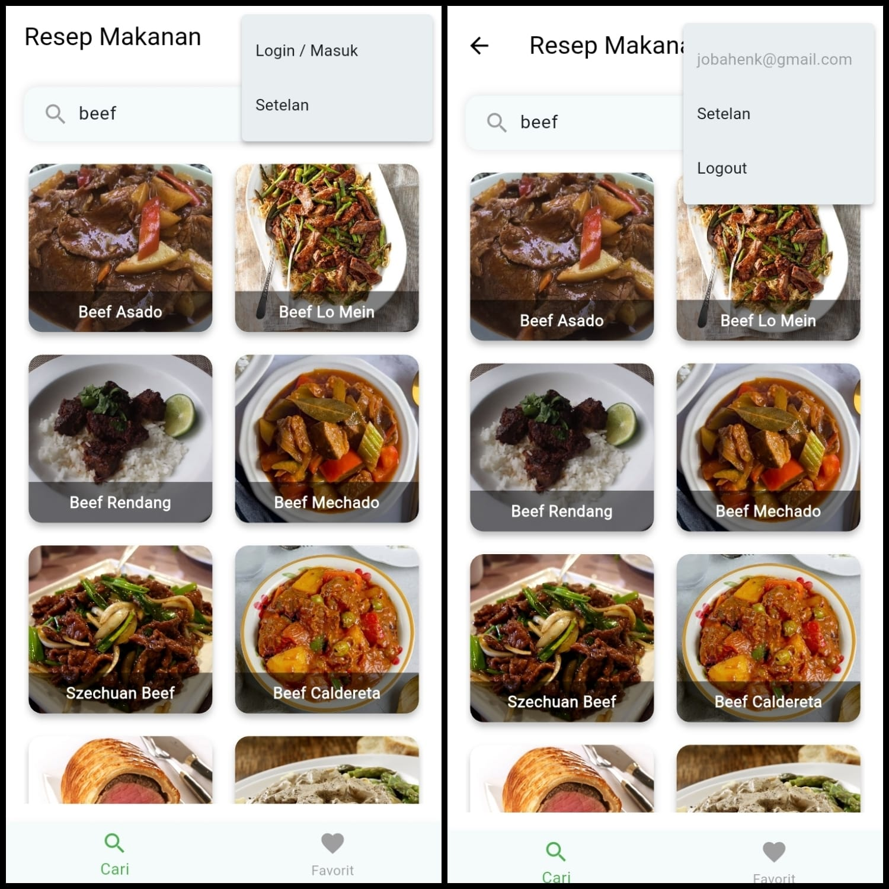
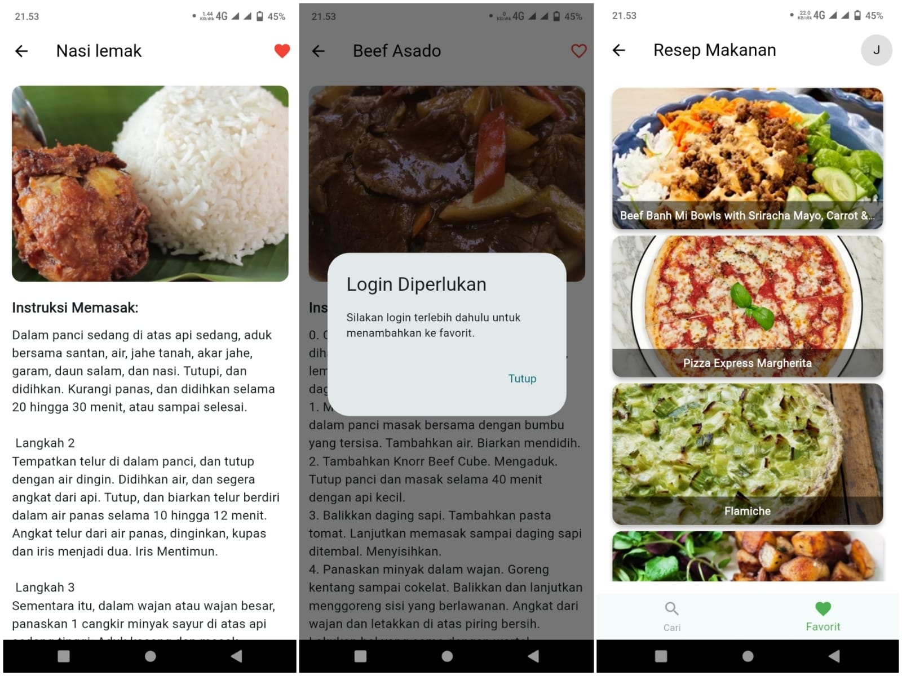

Resep Makanan App (Flutter)


Tentang Proyek
Ini adalah deskripsi lengkap tentang proyek aplikasi resep makanan. Saya membangunnya menggunakan Flutter untuk platform mobile (Android & iOS).
Aplikasi ini mengintegrasikan API pihak ketiga (TheCocktailDB) untuk mengambil data resep secara real-time. Fitur utamanya termasuk pencarian resep, halaman detail, dan sistem favorit menggunakan Firebase Firestore.
Tantangan & Solusi
Salah satu tantangan adalah mengelola *state* (data) secara efisien. Saya memutuskan untuk menggunakan provider state management untuk menangani data favorit pengguna yang tersinkronisasi dengan Firebase.